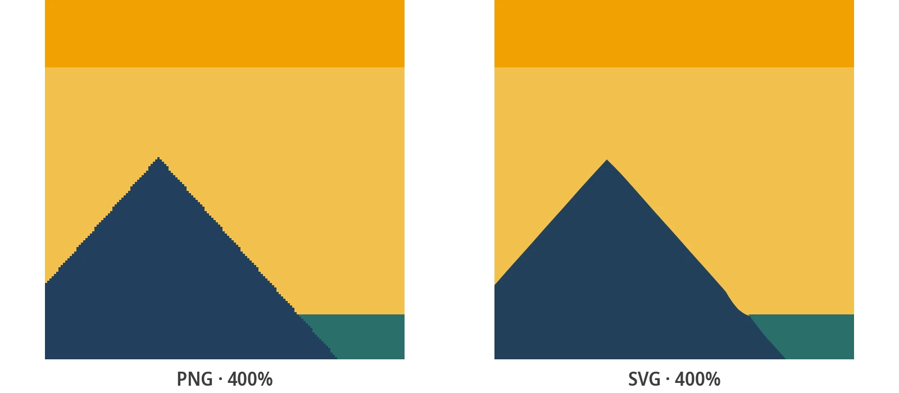

Free Image to SVG Converter
Upload any image - PNG, JPG, BMP, or WebP - and convert it to a clean, scalable SVG vector file. Free, instant, and no account needed.
How to Convert an Image to SVG
Three simple steps are all it takes. No design background required.
Upload your image
Drag and drop or click to upload any PNG, JPG, BMP, or WebP image. No size limit, no format restrictions.
Choose conversion style
Pick a preset - Black & White for clean lines, Poster for bold colors, Photo for detailed images.
Download SVG
Your vector file is ready in seconds. Download and use it in any tool, browser, or production workflow.
Real results from the converter

What is Image to SVG Conversion?
Converting an image to SVG means transforming a pixel-based raster image into a scalable vector graphic. Raster images - like PNG, JPG, BMP, and WebP - store visual information as a fixed grid of colored pixels. They're great for photographs and screenshots at their native resolution, but they become blurry and pixelated when enlarged. SVG, by contrast, stores shapes as mathematical coordinates and paths, allowing them to scale to any dimension without loss of quality.
The image-to-SVG conversion process - technically called vectorization or auto-tracing - analyses the edges, colors, and shapes in your raster image and recreates them as vector paths. PixelToPath handles this automatically, giving you a clean SVG file from any image format in seconds.
Why SVG is the Format of Choice for Graphics
SVG (Scalable Vector Graphics) has become the standard format for logos, icons, UI elements, and any graphic that needs to look sharp at multiple sizes. Unlike raster formats, SVG scales without degradation - it's the same file whether you're viewing it at 24 pixels or printing it at 2 metres.
Converting your images to SVG unlocks capabilities that raster formats can't offer:
- Resolution-independent: renders perfectly on standard screens, Retina displays, 4K monitors, and print
- Fully editable: open and modify the file in Adobe Illustrator, Inkscape, Figma, or any SVG editor
- Compact and web-friendly: SVG is often smaller than PNG for logos and icons, loads faster, and is animatable
- Machine-compatible: laser cutters, vinyl plotters, and embroidery machines all accept SVG as input
Why PixelToPath for Image to SVG Conversion?
PixelToPath combines simplicity, quality, and privacy in a genuinely free image-to-SVG conversion experience.
Free with No Limits
No credits, no paywalls, no file count restrictions. Convert any image to SVG as many times as you need.
All Formats Accepted
PNG, JPG, BMP, WebP - upload any common raster format and get a clean SVG back in seconds.
Smart Conversion Presets
Three presets - Black & White, Poster, Photo - automatically optimize the tracing algorithm for your image type.
Complete Privacy
Files are processed and deleted immediately. PixelToPath never stores, analyzes, or shares your images.
Works On Any Device
Browser-based and fully responsive - convert images to SVG on desktop, tablet, or mobile without installing anything.
Desktop Version Available
Prefer offline use? Download the free PixelToPath desktop app for Windows and Linux with batch conversion support.
Who Uses Image to SVG Conversion?
Image to SVG conversion is one of the most broadly useful operations in digital design. Here's who needs it and why:
- Graphic designers: convert client-supplied raster logos, scanned artwork, or digital illustrations into editable vector files
- Web developers: replace heavy PNG sprites with lightweight inline SVGs for sharper, faster-loading interfaces
- Content creators and marketers: prepare branded graphics, social media assets, and print-ready vectors from existing images
- Crafters and makers: vectorize designs for use with Cricut, Silhouette, or any vinyl and laser cutting machine
- Educators and students: understand vector graphics by converting familiar images and examining the resulting SVG paths
Whether your workflow is professional or creative, converting images to SVG with PixelToPath is the fastest route from raster to vector.
Related Conversion Tools
Need a format-specific converter? Try these free tools.
Frequently Asked Questions
What image formats can I convert to SVG?
PixelToPath accepts PNG, JPG/JPEG, BMP, and WebP as input. All four formats can be converted to SVG for free, with no account or software required.
How long does image to SVG conversion take?
Most conversions complete in just a few seconds, directly in your browser. The exact time depends on image complexity and your device, but there's no server queue or waiting period.
Can I convert a photo to SVG?
Yes. Use the Photo preset for photographic images. The result will be a stylized, vector-traced version of the photo - ideal for poster effects, screen printing, and artistic projects. For an exact pixel-by-pixel reproduction, raster formats remain better suited.
Is the SVG output editable?
Fully. SVG is an open, XML-based format. Open the file in Adobe Illustrator, Inkscape, Figma, Affinity Designer, or any SVG editor to modify paths, change colors, delete elements, or combine with other artwork.
Do I need to create an account to convert images to SVG?
No account is needed - ever. PixelToPath is completely free and anonymous. Open the tool, upload your image, download your SVG. That's it.
Convert Your Image to SVG Right Now
Free, instant, no account needed. Upload your image and download a clean SVG vector in under a minute.
Support Open Source Development
PixelToPath is free to use. If this tool helped you save time, consider buying me a coffee.
❤️ Donate via PayPal